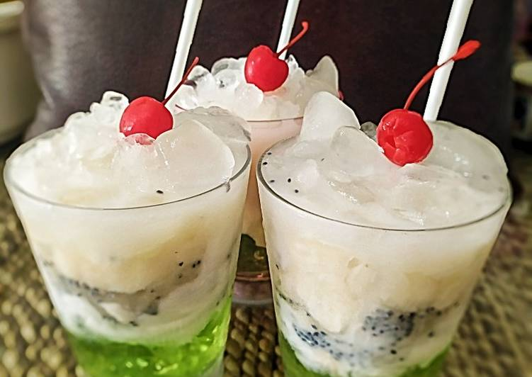

Resep Es Sirsak Kelapa Muda Jelly
Bahan-Bahan:
- 1 buah Kelapa muda
- Sirsak 1/2 buah ambil dagingnya
- Jelly nutrijel
- Sirup vanilla 1 gelas 3 sdm
- Susu mental manis
- Es batu
- Selasih
Langkah-Langkah:
-
langkah 1:
Buat jelly Dr Nutrijel,potong kotak2. Letakan didasar gelas
langkah 2:Ruang 3 Sdm Sirup Vanila
langkah 3:Masukan kelapa muda,Lalu selasih tambahkan es batu
langka 4:Diatas es letakan Sirsak, Lalu masukan es serut,siram dengan Susu mental manis
langkah 5:Hiasi dengan buah cherry